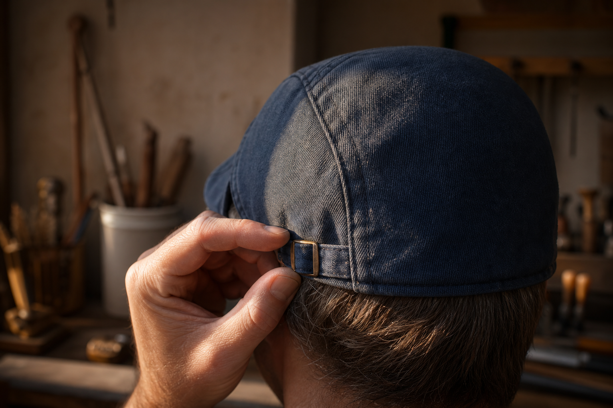
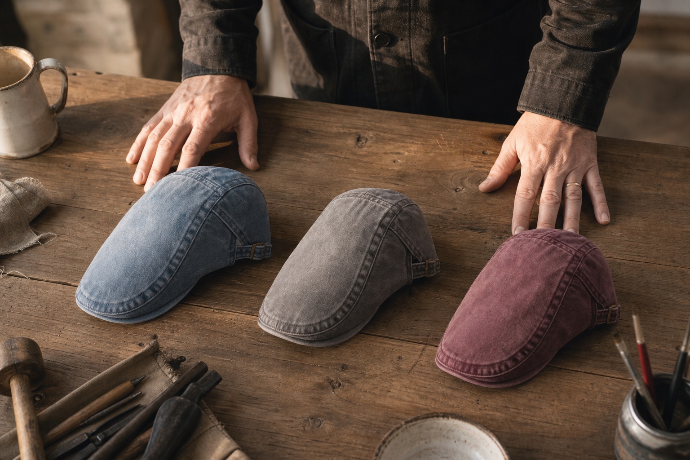

Set it once
You pull the side-adjuster once, on the first wear. It holds there. Nothing to redo.
A November evening, 6:40pm
Cap number four. Bought to cover, never chosen. Off at the door, like the three before it.
I took it off in the car park because keeping it on felt like an announcement. Then I spent four hours making sure I never stood under the light in the hallway.
When the phones came out, I was the one holding the drinks.
Driving home, I did the maths on five years of that. Four caps bought. Not one of them worn past a doorway. Every week I told myself it would do, and every week it cost me the same evening again.
I wasn't wrong about my head. I was wrong about the cut. It took me until I had two caps in the same fist to see it.
Free worldwide shipping. 100-Day Fit Guarantee.
I bought caps for years without ever touching one before it arrived. Here, the risk sits on our side: wear it a hundred days, and if it doesn't sit right, you get your money back.
So keep reading without doing the maths in your head.
What I found out in my own hand
Two caps, one hand, thirty seconds. Do it tonight with what's already on your hat rack.
The sports cap didn't fold. The shell held its shape against my fingers, and the long peak stayed rigid, pointing forward. Squeeze it, let go, and it comes back exactly as it was. Nothing in that object gives way to a head.
The flat cap folded flat and opened again with no crease. Soft shell. Short flat peak, taken from the same piece as the shell. A low line that follows the face instead of sitting on top of it.
That was the whole thing. Five years of blaming my head, and the answer was in the cut. A long peak pushes forward and flattens everything above the eyes. A short one stops short and leaves the line alone.
I wasn't wearing the wrong size. I was wearing the wrong shape.

Five years, four caps
Every one of them came off at the door.
The first one I bought at forty. Then another. Then two more. Four sports caps in a drawer, and not one I ever picked because I liked it.
They were bought for what they hid. That is a different thing from being chosen, and I think everyone could tell.
So each of them came off at the door. Restaurant, dinner at friends', the office lobby. Cap on outside, cap in my hand inside, because a stiff shell and a long peak look like something you should have taken off already.
Bare-headed was simpler. No hand on the peak, no decision at every threshold. That is where five years took me: not one cap I wanted, and evenings out with nothing on my head at all, telling myself it would do.
The cost that kept running
Not in money. In doors, in photographs, in evenings spent bare-headed.
The bill came due at every door. Restaurant, someone's kitchen, a shop with people in it. Off it came, into the coat pocket, and the rest of the evening was mine to get through.
Then I started leaving it in the car. Then I stopped taking one at all. That was easier, and it cost more.
Count it in photographs. Five years of standing at the edge of the group, or holding the camera so I wouldn't be in front of it. Nobody noticed. I did, every single time.
And the week after that one goes the same way, unless something changes.
The cloth
Which is why the first wear feels like the fiftieth.
I'd spent five years buying caps that had to be broken in. This one arrived already relaxed. Not softened by me, by years at the door and back in the car. Softened at the mill, before anyone cut a panel out of it.
That's the whole trick, and it's not a trick. Wash the denim in the piece, then cut. The shrink has already happened. The cloth is supple in your hand on day one, and it stays that size after you wash it at home.
Press the crown between thumb and finger: it gives, then comes back. Run your thumb along the tan suede trim: dry, matte, a slight drag on the skin. Nothing stiff. Nothing to break in.
That's how a thing becomes the tool you keep. It never asks anything of you.
Nine washes, all in stock

Construction
What I could only judge once I'd worn it for six hours straight.
The lining is sewn, not glued. That is the difference you feel around hour four, when a glued lining has started to lift and rub and you begin thinking about your head again. The headband is cotton, against the skin. Nineteen per cent of men in our survey say they binned a cap because it scratched or squeezed. That number is a construction problem, not a head problem.
The panels are cut and assembled, so the soft crown follows the skull instead of pressing on it. And the peak is taken from the same piece as the shell, not stitched on afterwards. No hard seam across the front. Nothing to snap.
That is the whole point of a tool you keep: you stop noticing it.

One cut
One cut, made to fit. A side-adjuster on the side, and the question of size is closed.
I had spent five years buying caps that never quite sat right. The first evening with this one, I pulled the side-adjuster in, felt the headband settle just above my ears, and that was the last decision I made about it.
It stays put. There's no size to get wrong, no measuring tape, no second-guessing between two numbers. One cut, made to fit any head.
That's the part I didn't expect. A cap you stop noticing is a cap you stop taking off at the door.
You pull the side-adjuster once, on the first wear. It holds there. Nothing to redo.
One cut, made to fit. The adjuster does the work a size chart used to do badly.
The band sits against the skin and the soft crown follows the head. It holds without pressing.

The profile
Front-on, both caps look fine. From the side, they are not the same object.
I only saw it in a shop mirror, turned sideways. The long peak pushes forward and flattens everything above the eyes. The short flat peak stops short, and the low line runs along the face instead of sitting on top of it. Same head. Two different men.
One honest word, because I would want it said to me. This is not a sports cap. It does not cover the forehead the way a long peak does, and it will not stay put on a bicycle at speed. If that is what you need, buy that instead.
What it does is quieter. Soft crown, washed denim, short peak: a line you stop noticing, the way you stop noticing a tool you have used for years.
| The Washed Denim Collection | Alternative | |
|---|---|---|
| Peak | Short and flat. Stops before it crowds the face. | Long. Pushes forward and presses the top of the face down. |
| Crown | Soft. Follows the head, folds into a coat pocket without keeping a crease. | Stiff shell. Holds its own shape, not yours. |
| Line | Sits low, follows the face in profile. | Sits on top, cuts a hard horizontal line. |
| What it is for | City, outdoors, the table. Worn, not deployed. | Sport. Forehead cover, hold at speed. |

What I said out loud before I ordered
I said all three. Here is what changed my mind, and it wasn't an argument.
I said them in that order, and I meant them. So I'll answer the way I was answered: with the cloth, not with a speech.
The long cut and the stiff cloth are what read old, not the shape. Short peak, soft crown, washed denim. Look at a profile shot before you decide. Plenty of men still don't like the shape, and no page will talk them out of it.
Cardboard comes from a rigid shell. This one folds into a coat pocket and comes back out without holding the crease. That's the part you check between your fingers.
The denim is washed in the piece, before it's cut. The excess dye leaves in the industrial wash, not on your skin.
It's the long cut and the stiff cloth that read old, not the shape. Short peak, soft crown, washed denim: look at the profile before you judge it. The objection is real and it won't disappear for everyone.
Then so is every jacket you own. This is one cut that sits low and follows your face. It reads as a chosen line, not as something pulled on at the last second.
That's what a rigid shell looks like. This one folds into a coat pocket and doesn't keep the crease when you take it out.
The denim is washed in the piece, before it's ever cut. The excess dye goes in the industrial wash.
At the table
Customer reviews, collected by email and published with permission (first name and initial).
The test was never the mirror. It was a table, in January, eight people around it, and no reason to reach up for my head.
I stayed. Other men wrote in to say the same thing, in their own words.
I wore it through an entire dinner without anyone asking me why I was keeping my cap on. That was a first.
Verified review, 12 January 2026
I started losing my hair at 40 and I bought cap after cap. All sports caps. I took them off the moment I walked in anywhere, because I thought it looked scruffy. The difference with this one is that I don't take it off any more.
Marc D., 47
Bought for my husband. He never takes it off.
Verified review, 3 March 2026
The washes
From an everyday light blue to a burgundy that isn't afraid of colour. All nine in stock.
I chose the light blue first, because I was still thinking like a man who wanted to go unnoticed. Six months later I ordered the burgundy.
That's the part nobody warns you about. Once you stop taking it off at the door, you stop choosing to disappear, and you start choosing a colour.
Nine washes, all in stock today, and the collection keeps growing as new ones are added. Same cut underneath every one of them.
One wash covers most days. Two means you never think about it again.
Nine washes in stock. Buy 2, get 1 free.

100-Day Fit Guarantee
It sits right, or your money back.
A mirror tells you nothing. I know, because I stood in front of one for years and still walked out bare-headed.
So don't judge it there. Wear it to the door. Wear it through a dinner. Wear it for a hundred days and see whether you take it off, or whether you forget it's on your head. That's the only test that counts, and it's the one the guarantee is built around.
If it doesn't sit right, you get your money back. Shipping is free anywhere in the world, no minimum. Payment is encrypted and your details are not stored. Someone answers, day or night, seven days a week.
A hundred days of wearing it costs you nothing. Another hundred days of taking it off at every door already has a price, and you've been paying it.
100 days to decide outside
Before you order
Short answers. No scene, no story, just the things that keep a decided man from clicking.
I asked myself all four of these before my first one. Here they are in the order they arrive in my inbox.
You don't need it. One cut, made to fit, and a side-adjuster on the side of the cap. Set it once and it stays put. It's impossible to get the size wrong.
Size exchange is possible during the return period. Wear it outside first, not in front of a mirror.
No. Short peak, soft crown. It doesn't cover the forehead the way a long peak does, and it won't stay put on a moving bike. That's the honest limit.
Beyond 61 cm, write to help@ashcroft-flatcaps.com before you order. I'd rather tell you first than send you the same thing twice.
Before the last click
Wear it outside during those thirty days, not in front of a mirror.
You don't need a size to order. But if the one you set doesn't sit where you want it, you exchange it for another, and the exchange costs you nothing for thirty days.
That's the point of a side-adjuster you set once: the size question is closed on the first wear, and if it isn't, it's on us.
Wear it to the door. Wear it through a dinner. Then decide, the way I decided: not in a fitting room, but at the table.
Thirty days, free size exchange
Last thing
One cut, washed before it was cut, with a side-adjuster you set once.
Good tools get forgotten. You buy one, you use it, and after a while you stop noticing it's there. That's what I wanted from a cap, and that's what the cloth and the line finally gave me.
Another week of nothing changing costs the same as every week before it. Doors, photographs, evenings bare-headed. Nobody sends you the bill, but you pay it.
Right now: 50% off, and buy two flat caps, get one free. Nine washes, all in stock. Free worldwide shipping, and a hundred days to decide.
Set it once. 100-Day Fit Guarantee: it sits right, or your money back.